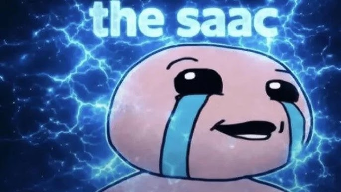
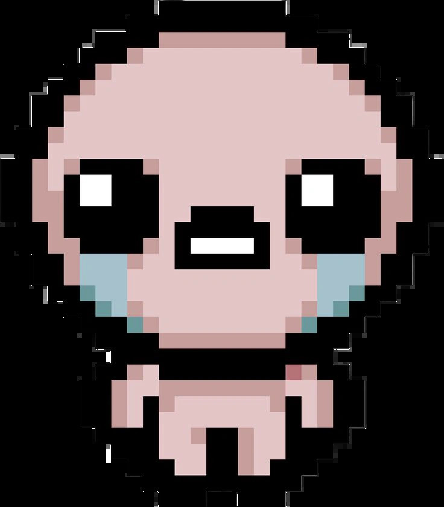
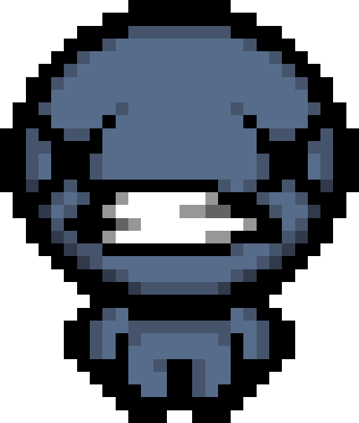

The Binding of Isaac es un videojuego independiente de accion y exploracion de mazmorras
generadas de forma aleatoria (roguelike). El jugador controla a un personaje que debe
enfrentarse a oleadas de enemigos y jefes mientras recolecta objetos que modifican sus
habilidades y apariencia.
El juego se caracteriza por su estilo visual oscuro y caricaturesco, su alta dificultad
y su enorme cantidad de contenido rejugable, ya que cada partida genera mazmorras distintas.
Accion, roguelike, dungeon crawler.
La historia sigue a Isaac, un niño cuya madre comienza a escuchar una voz que dice venir
del cielo, pidiendole que la pruebe quitandole a Isaac todo lo que tiene. Para salvar a su
hijo de un ataque final, Isaac escapa hacia el sotano de la casa, donde descubre un mundo
lleno de monstruos y peligros que representan sus propios miedos e inseguridades.
A medida que el jugador avanza, va descubriendo distintos finales que revelan mas detalles
sobre la relacion entre Isaac y su madre, y sobre el origen de los monstruos que habitan
el sotano.

Isaac es el protagonista original del juego. Es un niño pequeño que llora constantemente, y sus lagrimas son, de hecho, su arma principal contra los enemigos.
Habilidades especiales: Ataca disparando lagrimas en la direccion que el jugador indique. Es el personaje mas equilibrado del juego, sin bonificaciones ni penalizaciones especiales, lo que lo hace ideal para aprender la mecanica basica.

Blue Baby es un personaje desbloqueable que representa una version fallecida de Isaac. Tiene la piel de color azul palido y una expresion triste caracteristica.
Habilidades especiales: Comienza la partida con una vida roja menos que Isaac, lo que lo hace mas dificil de jugar, pero como compensacion tiene la capacidad de volar sobre huecos y obstaculos en el suelo.